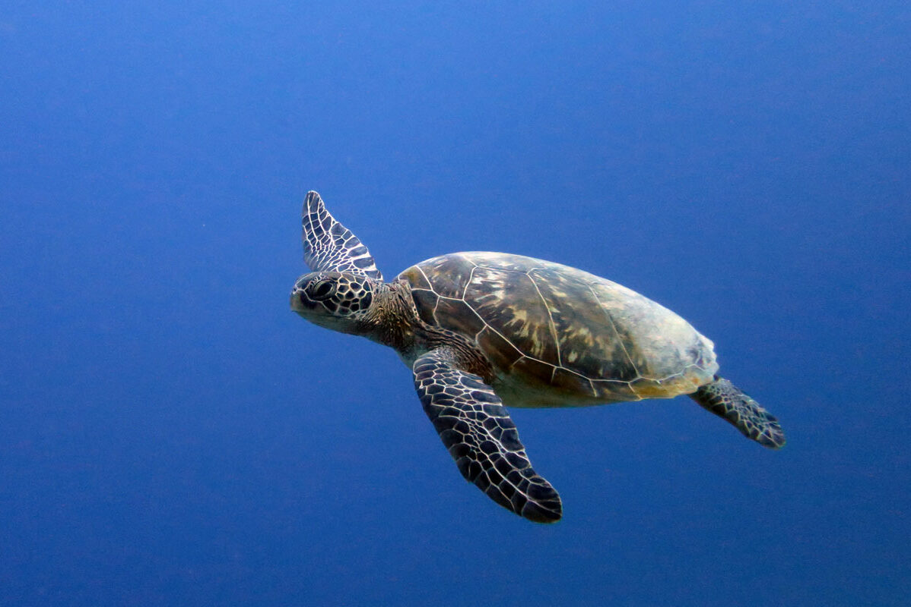
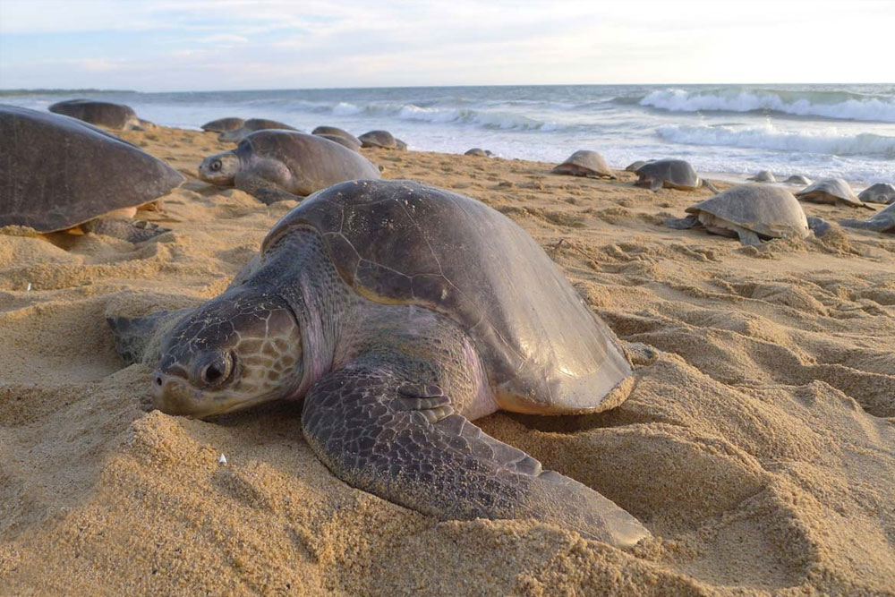
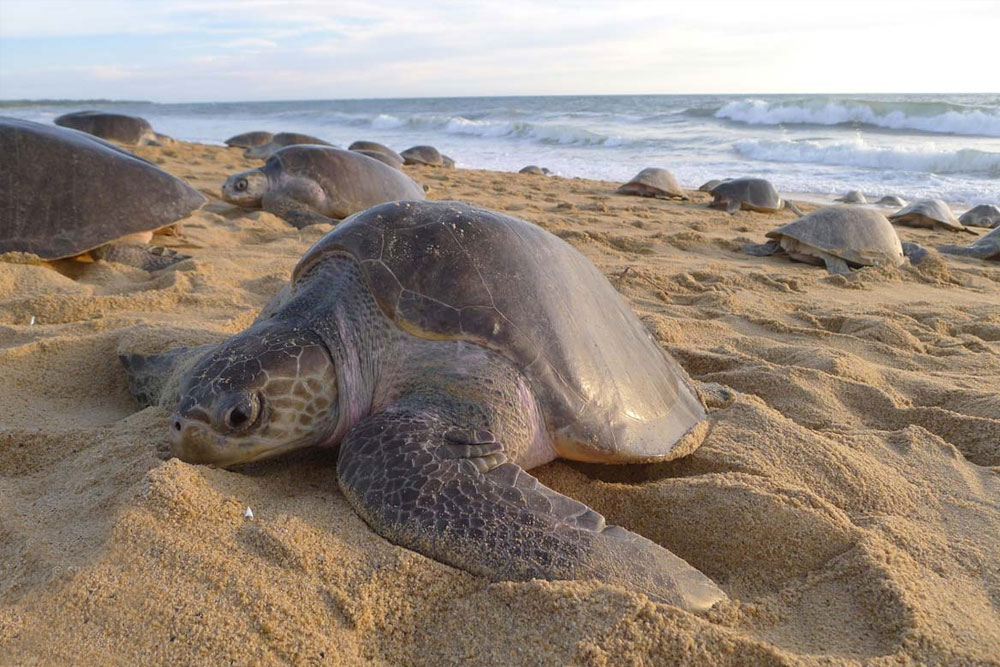

Olive Ridley Sea Turtle
The name of this sea turtle is derived from the color of its shell, which is olive green. They are currently the most numerous of all sea turtle species. Their vulnerability stems from the fact that they nest in a limited number of locations, therefore any disturbance to even one nest beach might have far-reaching consequences for the entire population. Olive ridley turtles can be found all over the world. Due to overexploitation for turtle meat and eggs, the population of olive ridleys has decreased significantly from historical estimates (for example, 10 million olive ridleys in the Pacific Ocean). The most serious threat to olive ridleys is bycatch in fishing gear and direct harvest of turtles and eggs.

| Kingdom | Animalia |
|---|---|
| Phylum | Chordata |
| Class | Reptilia |
| Order | Testudines |
| Family | Cheloniidae |
| Genus | Lepidochelys |
| Species | olivacea |
Appearence
Olive ridley sea turtles resemble Kemp's ridley sea turtles. The two species are the tiniest sea turtles. Olive ridley turtles have an olive/grayish-green carapace (upper shell) with 5 to 9 pairs of scutes. Each of the four flippers of an olive ridley has one or two claws. The size and shape of the olive ridley vary by geography, with the largest animals seen in West Africa.
Behaviour and Diet
Olive ridley turtles, like all other sea turtles, are marine reptiles that must surface to breathe. Adult female sea turtles come to shore to lay their eggs in the sand—they are excellent navigators and typically return to the same beach where they hatched. Only the genus Lepidochelys, which comprises the Kemp's ridley and olive ridley sea turtles, exhibits arribada nesting. Although other turtles have been recorded nesting in groups, no other turtle (marine or land) has been witnessed nesting in such large numbers and in such synchrony. Solitary nesting is common across the range of this species, and nesting has been observed in over 40 countries worldwide. Arribada nesting, on the other hand, occurs on only a few beaches around the world.
The olive ridley is omnivorous, which means it eats a wide variety of foods such as algae, lobster, crabs, tunicates, and mollusks. Olive ridleys may dive to 500 feet to graze on benthic invertebrates (those that reside on the seafloor).

Olive ridley turtles, like all other sea turtles, are marine reptiles that must surface to breathe. Adult female sea turtles come to shore to lay their eggs in the sand—they are excellent navigators and typically return to the same beach where they hatched. Only the genus Lepidochelys, which comprises the Kemp's ridley and olive ridley sea turtles, exhibits arribada nesting. Although other turtles have been recorded nesting in groups, no other turtle (marine or land) has been witnessed nesting in such large numbers and in such synchrony. Solitary nesting is common across the range of this species, and nesting has been observed in over 40 countries worldwide. Arribada nesting, on the other hand, occurs on only a few beaches around the world.
The olive ridley is omnivorous, which means it eats a wide variety of foods such as algae, lobster, crabs, tunicates, and mollusks. Olive ridleys may dive to 500 feet to graze on benthic invertebrates (those that reside on the seafloor).
Lifespan and Reproduction
Nobody knows how long olive ridleys live, but they are likely to outlive other sea turtles. Olive ridleys achieve maturity around the age of 14 years. The olive ridley sea turtle has one of the most unusual nesting patterns in nature. Large groups of turtles congregate offshore of breeding beaches, similar to Kemp's ridleys. Then, all at once, a large number of turtles arrive on the beach and lay their eggs in what is known as a "arribada," which means "arrival" in Spanish. Hundreds to thousands of females come ashore to lay their eggs during these arribadas. The nesting density is so great on many nesting beaches that previously laid egg clutches are dug up by other females while excavating the nest chamber to lay their own eggs.


 
